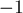

MAXimal
добавлено: 15 Dec 2011 23:31
редактировано: 16 Dec 2011 0:20
Содержание [скрыть]
Поиск общих касательных к двум окружностям
Даны две окружности. Требуется найти все их общие касательные, т.е. все такие прямые, которые касаются обеих окружностей одновременно.
Описанный алгоритм будет работать также в случае, когда одна (или обе) окружности вырождаются в точки. Таким образом, этот алгоритм можно использовать также для нахождения касательных к окружности, проходящих через заданную точку.
Количество общих касательных
Сразу отметим, что мы не рассматриваем вырожденные случаи: когда окружности совпадают (в этом случае у них бесконечно много общих касательных), или одна окружность лежит внутри другой (в этом случае у них нет общих касательных, или, если окружности касаются, есть одна общая касательная).
В большинстве случаев, две окружности имеют четыре общих касательных.
Если окружности касаются, то у них будет три обших касательных, но это можно понимать как вырожденный случай: так, как будто две касательные совпали.
Более того, описанный ниже алгоритм будет работать и в случае, когда одна или обе окружности имеют нулевой радиус: в этом случае будет, соответственно, две или одна общая касательная.
Подводя итог, мы, за исключением описанных в начале случаев, всегда будем искать четыре касательные. В вырожденных случаях некоторые из них будут совпадать, однако тем не менее эти случаи также будут вписываться в общую картину.
Алгоритм
В целях простоты алгоритма, будем считать, не теряя общности, что центр первой окружности имеет координаты  . (Если это не так, то этого можно добиться простым сдвигом всей картины, а после нахождения решения — сдвигом полученных прямых обратно.)
. (Если это не так, то этого можно добиться простым сдвигом всей картины, а после нахождения решения — сдвигом полученных прямых обратно.)
Обозначим через  и радиусы первой и второй окружностей, а через
и радиусы первой и второй окружностей, а через  — координаты центра второй окружности (точка отлична от начала координат, т.к. мы не рассматриваем случае, когда окружности совпадают, или одна окружность находится внутри другой).
— координаты центра второй окружности (точка отлична от начала координат, т.к. мы не рассматриваем случае, когда окружности совпадают, или одна окружность находится внутри другой).
Для решения задачи подойдём к ней чисто алгебраически. Нам требуется найти все прямые вида , которые лежат на расстоянии от начала координат, и на расстоянии от точки . Кроме того, наложим условие нормированности прямой: сумма квадратов коэффициентов  и
и  должна быть равна единице (это необходимо, иначе одной и той же прямой будет соответствовать бесконечно много представлений вида ). Итого получаем такую систему уравнений на искомые
должна быть равна единице (это необходимо, иначе одной и той же прямой будет соответствовать бесконечно много представлений вида ). Итого получаем такую систему уравнений на искомые  :
:
Чтобы избавиться от модулей, заметим, что всего есть четыре способа раскрыть модули в этой системе. Все эти способы можно рассмотреть общим случаем, если понимать раскрытие модуля как то, что коэффициент в правой части, возможно, умножается на .
Иными словами, мы переходим к такой системе:
Введя обозначения и , мы приходим к тому, что четыре раза должны решать систему:
Решение этой системы сводится к решению квадратного уравнения. Мы опустим все громоздкие выкладки, и сразу приведём готовый ответ:
Итого у нас получилось  решений вместо
решений вместо  . Однако легко понять, в каком месте возникают лишние решения: на самом деле, в последней системе достаточно брать только одно решение (например, первое). В самом деле, геометрический смысл того, что мы берём и , понятен: мы фактически перебираем, по какую сторону от каждой из окружностей будет прямая. Поэтому два способа, возникающие при решении последней системы, избыточны: достаточно выбрать одно из двух решений (только, конечно, во всех четырёх случаях надо выбрать одно и то же семейство решений).
. Однако легко понять, в каком месте возникают лишние решения: на самом деле, в последней системе достаточно брать только одно решение (например, первое). В самом деле, геометрический смысл того, что мы берём и , понятен: мы фактически перебираем, по какую сторону от каждой из окружностей будет прямая. Поэтому два способа, возникающие при решении последней системы, избыточны: достаточно выбрать одно из двух решений (только, конечно, во всех четырёх случаях надо выбрать одно и то же семейство решений).
Последнее, что мы ещё не рассмотрели — это как сдвигать прямые в том случае, когда первая окружность не находилась изначально в начале координат. Однако здесь всё просто: из линейности уравнения прямой следует, что от коэффициента  надо отнять величину (где
надо отнять величину (где  и
и  — координаты первоначального центра первой окружности).
— координаты первоначального центра первой окружности).
Реализация
Опишем сначала все необходимые структуры данных и другие вспомогательные определения:
struct pt { double x, y; pt operator- (pt p) { pt res = { x-p.x, y-p.y }; return res; } }; struct circle : pt { double r; }; struct line { double a, b, c; }; const double EPS = 1E-9; double sqr (double a) { return a * a; }
Тогда само решение можно записать таким образом (где основная функция для вызова — вторая; а первая функция — вспомогательная):
void tangents (pt c, double r1, double r2, vector<line> & ans) { double r = r2 - r1; double z = sqr(c.x) + sqr(c.y); double d = z - sqr(r); if (d < -EPS) return; d = sqrt (abs (d)); line l; l.a = (c.x * r + c.y * d) / z; l.b = (c.y * r - c.x * d) / z; l.c = r1; ans.push_back (l); } vector<line> tangents (circle a, circle b) { vector<line> ans; for (int i=-1; i<=1; i+=2) for (int j=-1; j<=1; j+=2) tangents (b-a, a.r*i, b.r*j, ans); for (size_t i=0; i<ans.size(); ++i) ans[i].c -= ans[i].a * a.x + ans[i].b * a.y; return ans; }